Stage 3 · one horse
One horse, at the scale it sits on the folder
Traced from Muybridge's Sallie Gardner (1878), the jockey removed, redrawn as chalk: an uneven line that skips, a translucent rubbed body, shading that follows the form, mane and tail in loose strokes. Placed where the reference's third horse is. Below, the drawing alone on transparency and the reference horse, both enlarged by the same amount.

